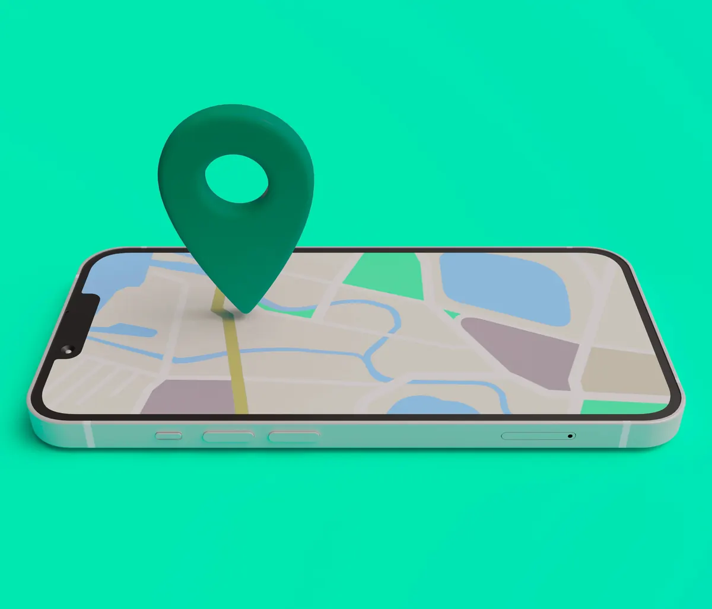

Você já reparou como seu celular sugere lugares próximos para comer, comprar ou se divertir? Isso é resultado de uma estratégia poderosa chamada marketing geolocalizado. Essa abordagem usa a localização do consumidor para mostrar anúncios, ofertas e conteúdos relevantes, tornando a experiência mais personalizada e eficaz. Neste artigo, vamos entender como isso funciona, por que é tão importante e como aplicar essas estratégias no seu negócio — tudo com base em estudos e conceitos do marketing moderno.
Por que a localização influencia tanto na decisão de compra?
Segundo a Teoria do Comportamento Planejado, criada pelo psicólogo Icek Ajzen, tomamos decisões com base em três fatores principais: nossa atitude em relação à ação, o que outras pessoas acham dela e o quanto sentimos que temos controle sobre aquela situação.
Aplicando isso ao marketing geolocalizado: quando um produto ou serviço está perto de você, a sensação de facilidade e conveniência aumenta — e com isso, crescem as chances de você comprar. Isso acontece porque a conveniência reforça o chamado "controle comportamental percebido", ou seja, a sensação de que a pessoa consegue realizar aquela ação com facilidade, o que aumenta a intenção de compra segundo a teoria de Ajzen — e com isso, crescem as chances de você comprar. Afinal, é muito mais fácil escolher um restaurante que está a 5 minutos do que atravessar a cidade para comer, mesmo que a comida seja parecida.
Além disso, a Comunicação Integrada de Marketing (CIM) — um conceito bastante conhecido por quem estuda o assunto — defende que todas as mensagens de uma marca precisam ser consistentes e bem coordenadas. Quando você usa a geolocalização, está enviando a mensagem certa, para a pessoa certa, na hora certa. Isso é extremamente poderoso, como explicam Kotler & Keller, grandes referências em marketing.
Estratégias práticas para usar o marketing geolocalizado
1. Anúncios locais no Google (Google Ads)
Com o Google Ads, você pode criar campanhas que só aparecem para pessoas que estão em determinadas regiões. Isso é ótimo para negócios locais como salões de beleza, oficinas, restaurantes ou lojas. Imagine alguém pesquisando "sorveteria perto de mim" e o seu negócio aparecendo logo no topo? Essa ação está alinhada com os micro-momentos — aqueles segundos decisivos em que o consumidor busca resolver uma necessidade imediata.
2. Anúncios geolocalizados nas redes sociais
Facebook e Instagram permitem segmentar anúncios por localização exata. Você pode, por exemplo, mostrar uma promoção de almoço para quem estiver a menos de 1 km do seu restaurante. Isso funciona muito bem com decisões por impulso, como mostram Schiffman & Kanuk ao estudarem o comportamento do consumidor. A proximidade física gera uma sensação de oportunidade que incentiva a ação imediata.
3. SEO Local e Google Meu Negócio
Ter um bom posicionamento nos resultados do Google quando alguém pesquisa por serviços próximos é vital. Cadastrar sua empresa no Google Meu Negócio, manter as informações atualizadas, responder avaliações e usar palavras-chave locais no seu site ajudam muito. Essa estratégia faz o consumidor perceber que sua empresa está logo ali, pronta para atender.
Ações que você pode começar a aplicar hoje
Crie promoções relâmpago para quem está por perto
Use plataformas como Google ou Meta Ads para lançar ofertas limitadas por localização. Um anúncio como "Desconto especial hoje na loja do Centro!" pode motivar quem está nas redondezas a visitar sua loja imediatamente. Esse tipo de ação conecta teoria e prática: usa a percepção de conveniência da teoria de Ajzen e o poder da comunicação direta e integrada de Kotler.
Organize eventos ou ativações para o público local
Seja uma degustação na loja, um workshop ou uma tarde com brindes, envolver a comunidade local faz com que a marca se torne parte do cotidiano das pessoas. Isso gera conexão emocional, algo essencial para construir valor de marca — como explica Kevin Keller em sua teoria de Brand Equity.
Faça remarketing geográfico
Você já ouviu falar em remarketing? É quando uma pessoa vê anúncios da sua empresa depois de ter visitado seu site. Agora imagine unir isso com localização. Você pode mostrar anúncios só para quem está próximo da sua loja e já demonstrou interesse antes. É uma combinação poderosa de reconhecimento e conveniência, que aumenta muito as chances de conversão.
Como medir os resultados dessas estratégias?
Não basta aplicar — é preciso analisar. Acompanhe indicadores como:
- Quantas pessoas viram e clicaram nos seus anúncios perto da loja
- Qual o custo por clique (CPC) em cada região
- Quantas vendas vieram dessas campanhas
Esses dados vão ajudar a entender o que está funcionando e o que precisa ser ajustado. E o melhor: permitem que você invista de forma mais inteligente.
Conclusão
O marketing geolocalizado é uma forma inteligente e estratégica de atrair clientes que estão perto de você. Ele une teoria e prática de forma eficiente: parte do entendimento profundo de como o consumidor decide (com base na psicologia e no comportamento), aplica os princípios de comunicação integrada e aproveita as ferramentas de tráfego pago para alcançar resultados concretos.
Com o mercado cada vez mais competitivo, ganhar destaque na sua região pode ser o diferencial que você precisa para crescer. Se você tem um negócio físico ou atende uma área específica, essa é uma estratégia que não dá mais para ignorar.
Quer resultados como esses no seu negócio?
Receba um diagnóstico estratégico gratuito e descubra como tratar o seu marketing como investimento.
Falar com a BAM →